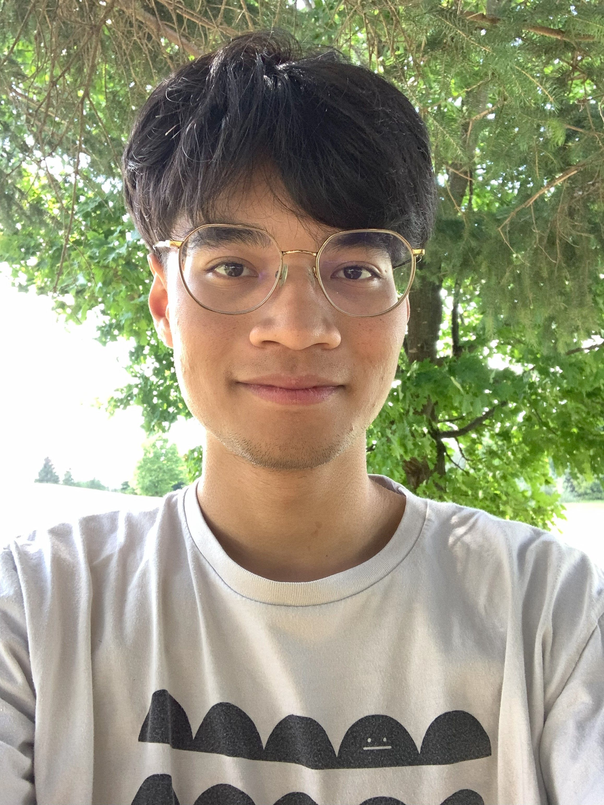

Hi! I'm a CS PhD student in the Algorithms & Complexity Group at the University of Waterloo, where I am advised by Rafael Oliveira and Stephen Melczer.
I completed my undergraduate at Rutgers University (in math and CS). In my last year, I wrote an undergraduate thesis under the supervision of Karthik C. S., summarizing the research into clustering problems we did together.
Feel free to email me at [firstname].[lastname]@uwaterloo.ca
I'm broadly interested in theoretical computer science, and more specifically in complexity theory. I enjoy problems that use interesting math (particularly, nice algebraic or analytic) techniques.
Even more specifically, I'm currently interested in algebraic complexity and in analytic combinatorics.
On connections between k-coloring and Euclidean k-means
EA, Karthik C. S., Sharath Punna
ESA 2024 [dagsthul] [arxiv]
In Summer 2022, I was a participant in the DIMACS REU program. I studied the Markoff surface and the strong approximation conjecture under the guidance of Alex Kontorovich. Here is a link to my research log during that time.
Outside of academic things, I enjoy taking pictures of stuff, eating food, and playing rhythm games. Click here for more details!